IQVIA · Pharma
Content that can survive MLR.
ePromo is IQVIA’s document platform for commercial and medical content. The job was to take a tool 90% of users could not finish without help, and turn it into a collaborative review surface — annotation, approval, and templates — that moved material from concept to delivery without leaving FDA reality behind.
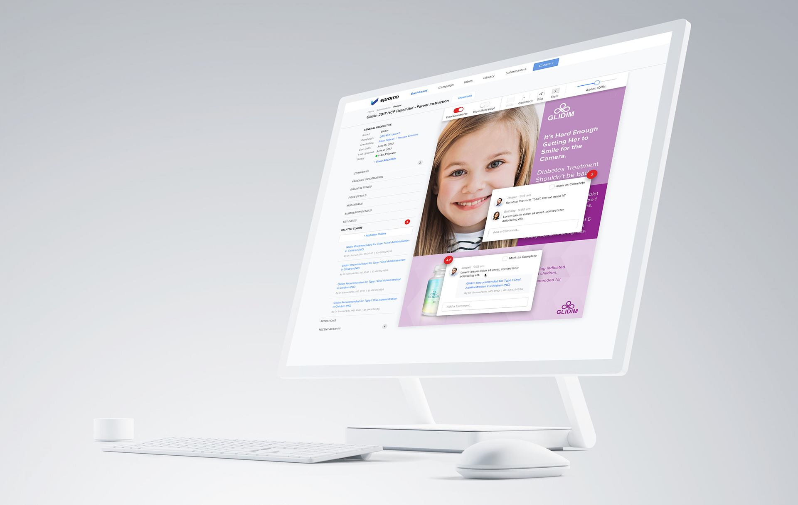
What shipped
A purpose-built document system for pharma teams: create, collaborate, stay compliant, and get to market. Automated the work that had been tribal, tightened accuracy on claims, and made approval a conversation on the page. Secure data, fewer missed deadlines, and a measured 40% lift in workflow speed.
Why this product exists
I watched people use the existing tools. The pattern was consistent: a labyrinth of features, a pause, then a call for support. Creative agencies, brand managers, project managers, and MLR reviewers all lived in the same hub — and 90% of them could not complete the journey without someone else in the room.
Compliance cannot live in a menu maze. It has to live next to the sentence it is judging.
What I owned
- Discovery with the ePromo team: demographics, roles, and how each of them actually talks when a document is late.
- Persona-driven IA so MLR, marketing, agency, and PM are not forced through one dashboard.
- User flows, task flows, and sitemaps with product owners — estimates early, even when they were deliberately rough.
- The collaborative canvas: inline comments, threaded annotation cards, and a menu that only shows what you need first.
01
The first hour is the product
An emotional map of first arrival and first task made the cost of the old IA visible: uncertainty, no self-identification, inability to complete, nowhere to find help. Excitement only showed up when setup was already done for them. That chart was the brief.
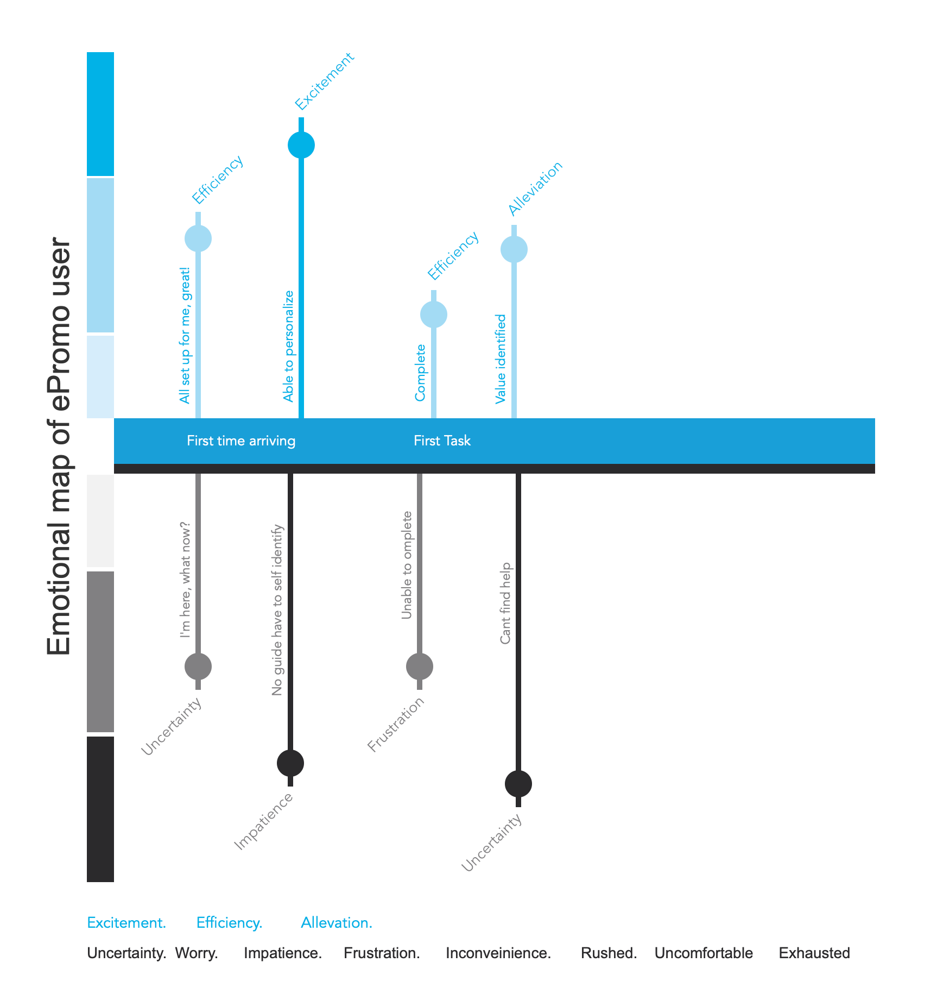
02
Two jobs, two dashboards
An MLR reviewer needs which documents are in review, due date, file type, and a calendar of meetings. Marketing needs overdue pieces, WIP, expiring assets, campaigns, and claims. Same product. Different “needs to know.” Personas were not decoration — they were the permission to stop designing one home for everyone.
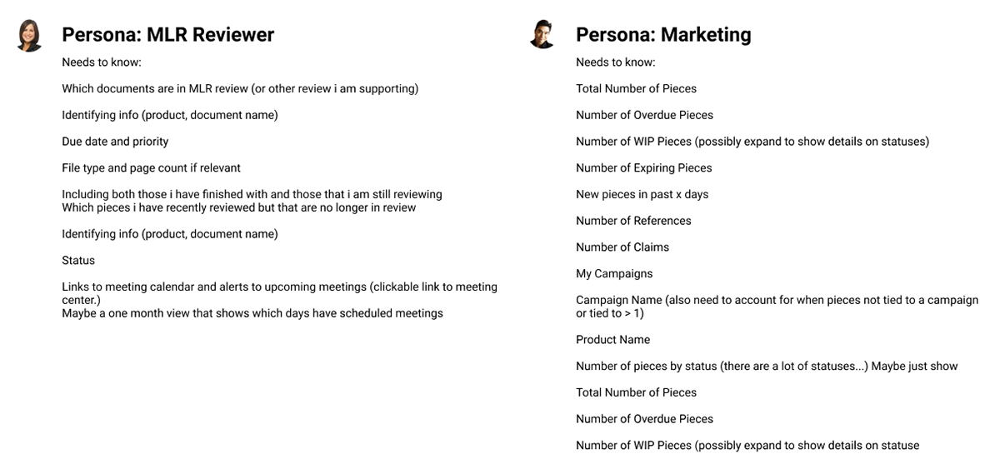
03
Navigation that assigns a role, then a room
Existing builds showed how each persona actually completed a task. Onboarding then split: unrecognized users register; recognized users get a role and land on the dashboard that matches — agency, brand, coordinator, or MLR — each with submissions, library, campaign, and inbox. Create, search, and the submission room sit off the header, not buried in a feature list.
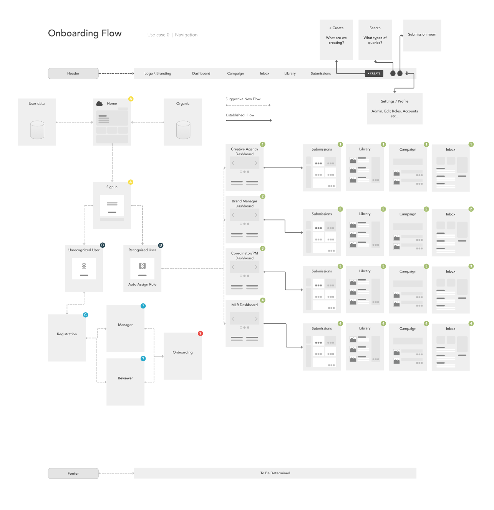
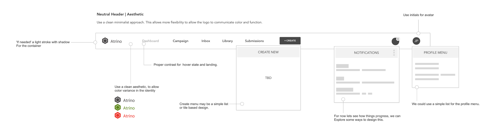
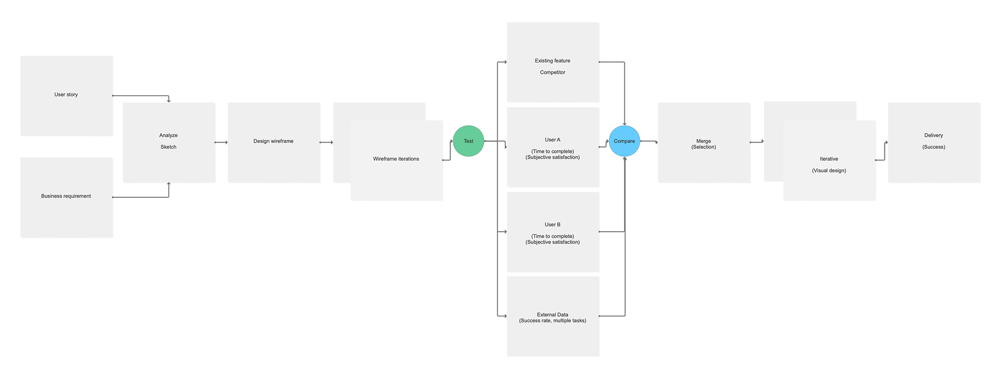
04
Create as identification, then categorization
New documents used to dump every field at once. The redesigned sequence is identification, then categorization, then artifact, content, and metadata — with a progress bar that tells you what happens after the click. Templates are a library you customize, not a blank page you fear.
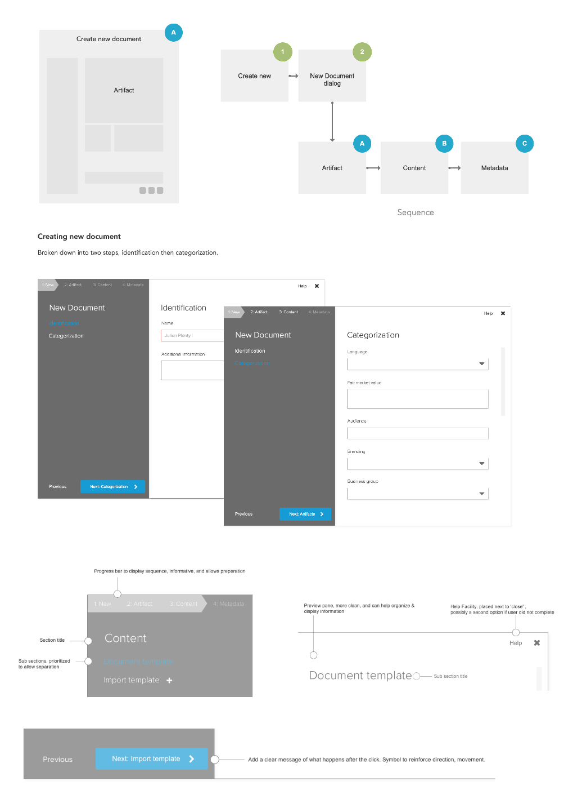
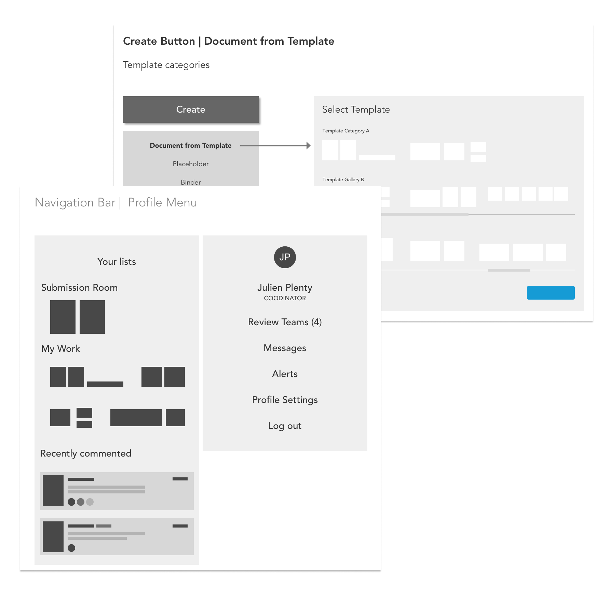
05
The canvas is the meeting
Review used to leak into email. The collaborative canvas keeps comments on the creative: real-time annotations, threaded replies with author and timestamp, targeted pins, and a history you can audit. Approve, request changes, or reject without leaving the exhibit. Menus were cut to the tools people actually touch — labels in their language, not the platform’s.
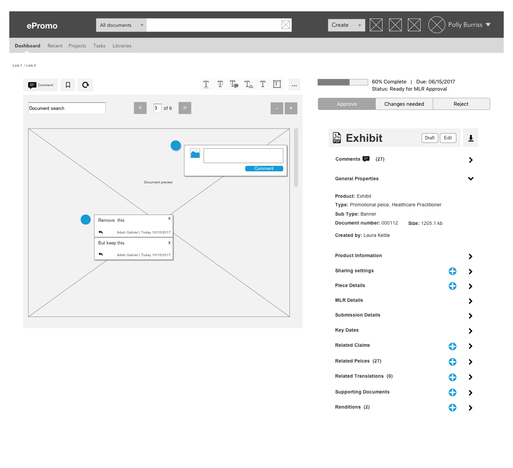
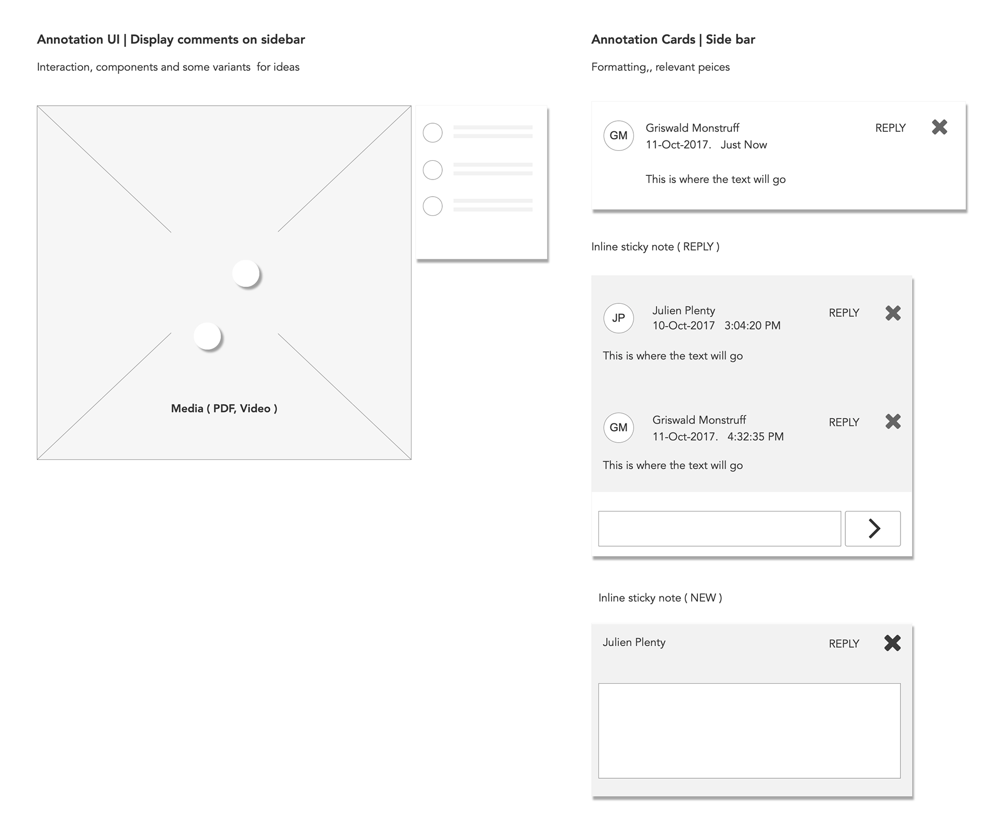
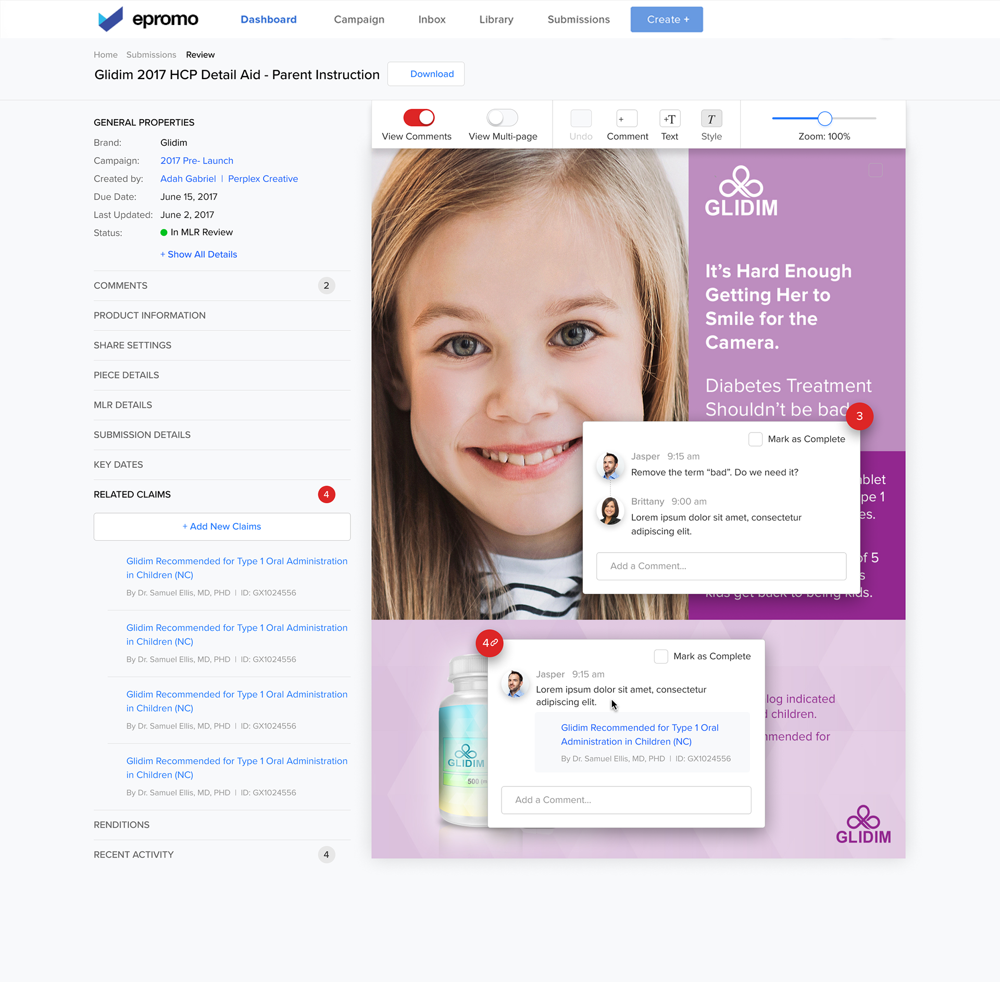